Miesten oikeuksien aktivismia?? Antifeministisiä juttuja täällä? 👀
Ei! Miesten oikeudet ovat miesten puolesta, eivät naisia vastaan. Monet miestenoikeusaktivistit ovat myös itse feministejä.
Okei, mutta ovatko miesten oikeudet incelisiä, patriarkaattisia tai oikeistolaisia?
Pohjimmiltaan - ei. Incel-iset, patriarkaaliset ja oikeistolaiset ajatukset eivät ole vain roskaa kaikille, vaan jopa ristiriitaisia miesten oikeuksien kanssa.
Mutta joskus miesten oikeuksien "aktivistit" ovat valitettavasti inceleitä tai tradkoneita, kyllä. Murskataan nuo hölmöläiset yhdessä.


Mutta eivätkö miehet ole etuoikeutettuja ja naiset herkkiä?
Ei. Tiedot kertovat, että myös miehet ovat herkkiä. Jos olet älyllisesti rehellinen, et voi kiistää sitä.
Väitätkö, että miehillä ei ole etuoikeuksia?
Ei. Miehillä on etuoikeuksia ja haavoittuvuuksia. Ja naisilla on omat haavoittuvuutensa ja omat etuoikeutensa. Se on niin yksinkertaista.
Mutta emmekö me elä patriarkaatissa?
"Patriarkaatilla ei ole sukupuolta" - Bell Hooks
Feministi Gayle Rubin on kirjoittanut kirjassaan "The Traffic in Women", että patriarkaalinen järjestelmä on isien (patriarkkojen) absoluuttisen vallan järjestelmä - esim. raamatullinen hahmo Abraham oli patriarkka. Patriarkka voi raiskata, myydä tai tappaa "omat" naisensa ja lapsensa ilman rangaistusta. Nykyään emme siis elä patriarkaatissa vain alkaen siitä, että miestä rangaistaan naisen raiskaamisesta tai tappamisesta.
Jatketaan edelleen: vaikka hallitukset ovat todellakin useammin täynnä miehiä, hallitukset eivät juuri koskaan tee päätöksiä, jotka hyödyttävät miehiä ryhmänä. Kuten olemme nähneet edellä, miehet eivät todellakaan ole etuoikeutettuja tai "nykyisen järjestelmän edunsaajia".
Kolmanneksi, järjestelmä antaa haavoittuvuuksia ja etuoikeuksia sekä miehille että naisille (eikä yhtään ei-binäärisille ihmisille heidän oikean sukupuolensa mukaan, lol).
Jos ei patriarkaatti, niin miten sitten kutsua epätasa-arvoista maailmaa?
Sukupuolijärjestelmä ●
This option was suggested by Gayle Rubin.
Englanniksi: sex/gender-system tai gender-system.
Kyriarkia ●
Feministisessä teoriassa kyriarkia on sosiaalinen järjestelmä tai joukko toisiinsa liittyviä sosiaalisia järjestelmiä, jotka rakentuvat hallinnan, sorron ja alistamisen ympärille. Jos patriarkaatti tarkoittaa "isien valtaa", kyriarkaatti tarkoittaa "herrojen valtaa" tai "hallitsijoiden valtaa". Kyriarkian mukaan etuoikeutettuja ovat siis periaatteessa ihmiset, jotka istuvat hallituksissa tai suuryrityksissä, olivatpa he sitten miehiä tai naisia.
Ja älä käytä:
Matriarkaatti ⚬
Järjestelmä ei anna naisille tarpeeksi valtaa tai etuja, jotta heitä voisi kutsua etuoikeutetuiksi.
Mutta miehiä syrjivät toiset miehen, eivät naiset?
Tämä ei ole totta.
Lähisuhdeväkivalta:
- Valtavassa järjestelmällisessä katsauksessa, jossa tarkasteltiin 62:ta eri tutkimusta, päädyttiin siihen, että "naisen tekemä henkinen väkivalta on yleinen ilmiö heteroseksuaalisissa parisuhteissa nuorilla, opiskelijoilla ja aikuisilla".
- Toisessa lähes 100 tutkimusta käsittävässä meta-analyysissä todettiin, että heteroseksuaalisissa parisuhteissa naiset käyttävät fyysistä väkivaltaa kumppaniaan vastaan jopa hieman useammin kuin miehet.
Seksuaalinen väkivalta:
- Vuonna 2008 tehdyssä tutkimuksessa, johon 98 miestä haastateltiin rikosten uhriksi joutumista koskevassa tutkimuksessa, todettiin, että lähes puolet (46 %) miehistä, jotka ilmoittivat joutuneensa jonkinlaisen seksuaalisen väkivallan uhriksi, olivat naisten uhreja.
- CDC USA:n vuosien 2010 ja 2012 tutkimuksissa todettiin kummassakin, että 40,5 prosenttia kaikista heteroseksuaalisista raiskaajista on naisia. [?]
Lapsuus:
- Yli puolet lasten pahoinpitelyyn/hylkäämiseen syyllistyneistä on nykyään äitejä (53,5 % / 45,3 %).
- Naiset ovat osallisina 45% lasten hyväksikäyttörikoksissa (22 % vain naispuolisia tekijöitä + 23 % sekä mies- että naispuolisia tekijöitä).
Sodat:
- Naiset myös aloittavat sotia, joissa vain miehet joutuvat kuolemaan.
- Vuosina 1480-1913 kuningattaret aloittivat sotia 27% todennäköisemmin kuin kuninkaat.
Ja niin edelleen.
Vaikka miehiä sorrettaisiinkin vain toisten miesten toimesta, olisi törkeää julmuutta vastustaa miesten oikeuksia koskevaa aktivismia vain tämän vuoksi. (Huomaa, että yllä olevat tiedot eivät sano, etteivät miehet voi olla pahoja tai että kaikki naiset ovat pahoja, mutta ainoastaan, että jotkut naiset voivat olla myös pahoja - mikä löytö!).
Mutta tämä on vastoin feminististä ideologiaa: syrjintä ei voi toimia "taaksepäin"?
Jos ideologia (esim. homofobia, rasismi tai miehiä vihaava feminismi) puhuu tieteellistä dataa vastaan, on aika muuttaa ideologiaa. Mutta minun mielestä ajatus siitä, että miehet syrjivät naisia, on itsestään väärin. Naisia ja miehiä syrjii kyriarkaatti/sukupuolijärjestelmä, ei toinen toistaan, kuten sukupuolivähemmistöjä syrjii heteronormatiivinen järjestelmä, eikä heterot eksklusiivisesti. Ja tästä voimme olla samaa mieltä: syrjintää "takaperin" - eli tavallisten naisten ja miesten syrjintää vallanpitäjiä kohtaan - ei ole olemassa.
Yritätkö sanoa, että feminismiä ei enää tarvita?
Ei. Miesten oikeuksien ideassa on kyse siitä, että "myös miehet ovat herkkiä", ei siitä, että "naiset eivät ole". Naisilla on edelleen omat ongelmansa: esim. aborttioikeudet, hyväksikäyttö prostituutiossa ja pornografiassa, transnaisten sorto, perusoikeusten puute islamistisissa (ei muslimi-) maissa, kielten androsentrismi ja muut, jotka on syytä korjata.
Miten meidän pitäisi kutsua miesten oikeuksien liikettä?
Miesten oikeuksien puolesta, tasa-arvosta käyvä taistelu kutsutaan yleensä maskulismi.
Taistelua patriarkaatin tai naisvihamielisyyden puolesta kutsutaan yleensä maskulinismi.
Niitö joskus sekoitetaan, koska miesten oikeudet eivät ole vielä yleisesti tunnettu. Sitoudu maskulismiin, jotta voisimme varmuudella pakkolunastaa termin vasemmalle puolelle.
Jos haluat pysyä mahdollisimman neutraalina tai et halua kuulostaa poliittiselta (-ism-pääte kuten sanoissa kapitalismi, anarkismi), voit aina sanoa "miesten oikeuksien puolustaminen" (men's rights advocacy).
Mitä seuraavaksi? Heteroseksuaalien tai valkoihoisten syrjintä?
Ei. Valkoiset ja heteroseksuaaliset miehet ja naiset ovat todellakin etuoikeutettuja: valkoisen ihonväriä tai heteroseksuaalista suuntautumista vastaan ei ole lakia; ei ole maata, jossa heteroseksuaalisuus olisi laitonta; valkoisia ja heteroita ei tapeta sen enempää kuin mustia ja homoja. On älytöntä väittää tätä vastaan.
Onko maskulismi vain reaktio-vastaus feminismiin?
Ei, koska siinä puhutaan edelleen vain miehistä (joilla kiistatta on ongelmia), ei naisia vastaan. Vertaa: transnaisten aktivismi ei ole "«miesten» reaktio-vastaus feminismiin" (kuten TERF:it sanovat), se on taistelua perusihmisoikeuksien puolesta.
Mutta feminismi taistelee jo kaikkien sukupuolten tasa-arvon puolesta?
Kyllä ja ei. Teoriassa - kyllä, se taistelee naisten ja miesten tasa-arvon puolesta. Mutta käytännössä feminismi ei tee juuri mitään miesten hyväksi. Se ei haittaa, koska feminismissä on kyse naisten oikeuksista: sen ei pitäisi välttämättä taistella miesten puolesta, aivan kuten ekoaktivistien ei pitäisi välttämättä taistella rasismia vastaan (voi kuitenkin olla ekoaktivisti ja rasisminvastainen). Tarvitsemme kuitenkin erillisen liikkeen, joka keskittyy miesten oikeuksiin, jotta voimme lähestyä sukupuolten epätasa-arvoa molemmilta puolilta: tehdä naisista tasa-arvoisia miesten kanssa ja miehistä tasa-arvoisia naisten kanssa. Olisi myös mahtavaa, jos feminismi, maskulismi ja enby-aktivismi tekisivät yhteistyötä taistelussaan.
Onko miesten syrjintä kuitenkin järjestelmällistä?
Kyllä, ja juuri se on maskulismin ydin: se kertoo meille, että armeijat, poliisiväkivalta, itsemurhat ja niin edelleen ovat järjestelmä, eivät irrallisia tapahtumasarjoja.
Jos keskitymme miehiin, emmekö unohda taistella naisten puolesta?
Yhtäältä: ehdottomasti emme. Jos intersektionaalinen feminismi ei ajattele, että samanaikainen taistelu homofobiaa, rasismia, transfobiaa, ableismia, ageismia ja niin edelleen vastaan haittaa, sen ei pitäisi ajatella, että misandrian lisääminen "taistella vastaan" -listan rikkoo kaiken. Jos olet TERF, no, pöh.
Toisaalta jos joku huolii siitä, että EI antifeministinen miestenoikeusliike vahingoita feminismiä, voi tarkoittaa sitä, että joku pelkää menettävänsä monopolinsa uhrin asemaan tunnustamalla, että miehetkin voivat olla uhreja. Siitä pitäisi saada yli.
Mitä mieltä olet "patriarkaatti vahingoittaa myös miehiä: he eivät pysty käsittelemään tunteitaan" -agendasta?
Nykyinen systeemi todellakin opettaa miehille "toksista maskuliinisuutta", mikä on ongelma. Toisaalta, olen kyllästynyt niihin, jotka pelkistävät koko ongelman vain ja ainoastaan siihen. Pahimmassa tapauksessa - valtavat vasemmistolaiset super-inklusiiviset "kaikkea syrjintää vastaan" -festivaalit kertovat minulle, että "miesten syrjintää ei ole olemassa", koska "miehet eivät ole herkkiä, he ahdistavat muita ihmisiä kaikkialla maailmassa", mutta "miehet kärsivät patriarkaatista myös siinä, miten heitä opetetaan käsittelemään tunteita! :(". Tämä agenda sanotaan usein vihjaillen, että "miehet ovat järjestelmän edunsaajia, mutta heillekin on siinä on pieniä puutteita".
Mitä ajattelet iskulauseesta "kaikki miehet ovat raiskaajia"?
Samaa, mitä sinun pitäisi ajatella "kaikki tummaihoiset ovat murhaajia" tai "kaikki homot ovat pedofiilejä" iskulauseista. Jotkut tummaihoiset ovat murhaajia (0,01 % USA:ssa), jotkut homot ovat pedofiilejä (0-3 % maailmanlaajuisesti), jotkut miehet ovat raiskaajia (0,06 % USA:ssa).
"Kaikki naiset ovat huoria/tekopyhiä/kullankaivajia/jne - ja jos se satuttaa sinua, sinä olet ongelma!" sanomista ei ole ok − miksi se ei olisi sama miesten kohdalla?
Tämä iskulause levittää myös hyödytöntä toksista pelkoa miehiä kohtaan: esimerkiksi joka kolmas nainen pelkää joutuvansa seksuaalisen väkivallan kohteeksi, vaikka 0,9% on joutunut sellaiseksi viimeisten 12 kuukauden aikana.
Uskon, että tasa-arvon ei pitäisi perustua kilpailuun tai hegemoniataisteluun vaan yhteistyöhön ja kunnioitukseen.
Silloin olemme samalla puolella.
Kunnioita miesten oikeuksia, tue feministien ja maskulistien välistä yhteistyötä, älä kilpaile siitä, kumpaa sorretaan enemmän, älä kamppaile feminismin hegemoniasta sukupuolten tasa-arvon kehässä.
Kiitos. Olemassaolosi todella piristää minua.
Levitä sanaa - tai linkkiä tähän verkkosivustoon. Erityisesti vasemmistolaisissa ja liberaaleissa liikkeissä.
Tavoittele sukupuolten tasa-arvoa, ei naisten etuoikeuksia.
Jos et taistele miesten puolesta, älä vastusta niitä, jotka taistelevat. Jatka silti rohkeasti patriarkaalisten ja naisvihamielisten aktivistien vastustamista.
Ja poista #KillAllMen twitteristäsi. :^(
Hyödyllisiä linkkejä:
OLEN MIES* JA TARVITSEN APUA
HALUAN OPPIA LISÄÄ MASKULISMISTA